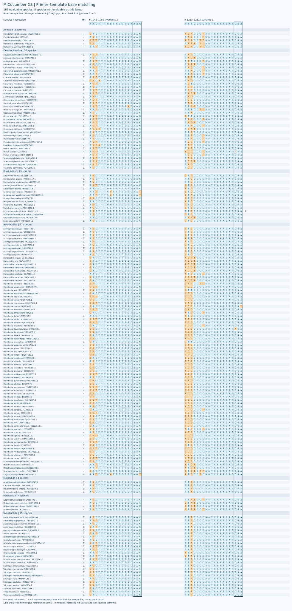
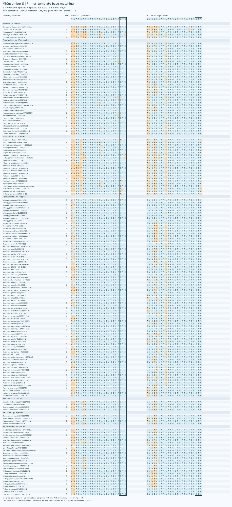
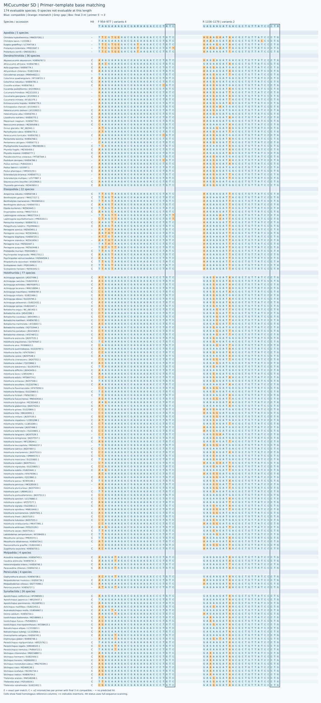
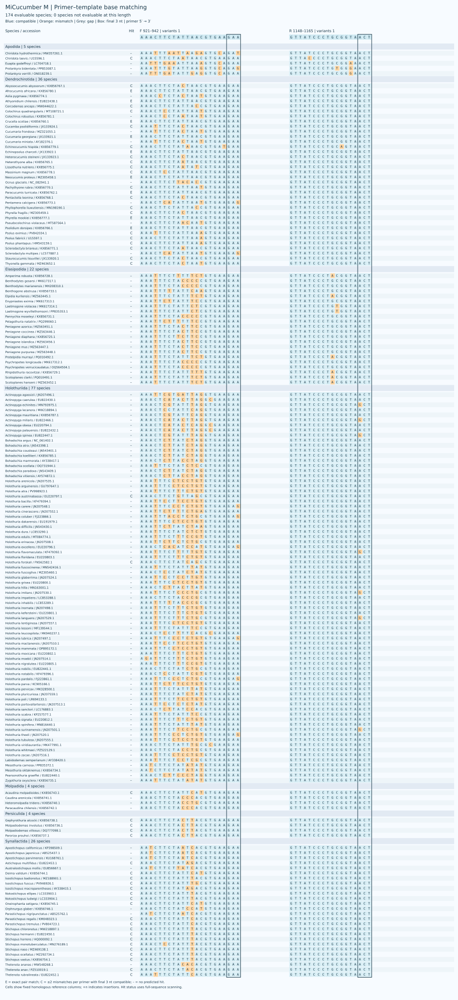
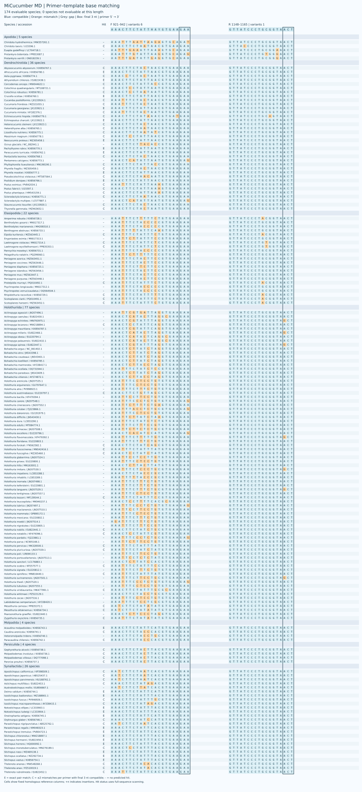
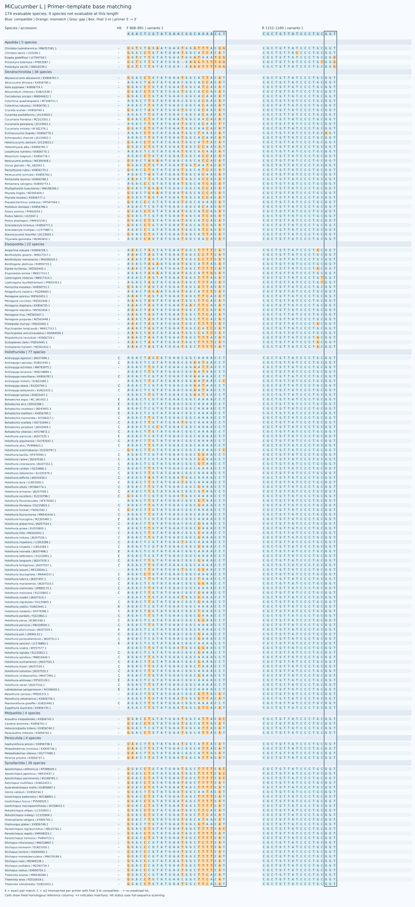
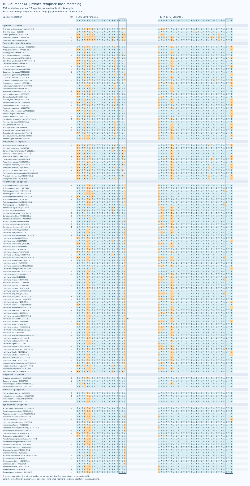
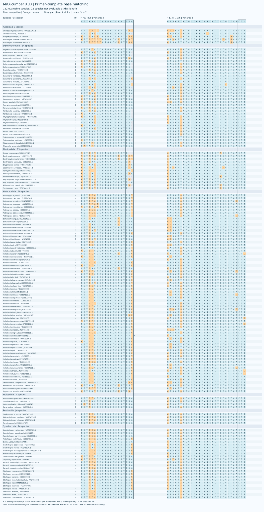

线粒体 16S rRNA 环境 DNA 候选引物，包含 XS、S、M、L、XL。S–XL 各保留普通单对及简并单对 D，同长度共享参考坐标；XS 为固定单对。 每个物种保留一条参考序列；主指标对可评价物种等权，各目单列。 海参面板有 174 个物种；XS、S–L、XL 分别可评价 166、174、152 个物种。
参考面板 / Reference panel · 参考序列审核 / Reference curation

| Name | Coverage | Exact | Strict WC / GT | WC≤3 / GT≤2 |
|---|---|---|---|---|
| XS | 75/166 (45.18%) | 0/166 (0.00%) | 0 / 0 | 33 / 2 |
| S | 110/174 (63.22%) | 5/174 (2.87%) | 1 / 3 | 4 / 3 |
| SD | 130/174 (74.71%) | 0/174 (0.00%) | 0 / 5 | 58 / 6 |
| M | 55/174 (31.61%) | 9/174 (5.17%) | 0 / 2 | 1 / 2 |
| MD | 89/174 (51.15%) | 24/174 (13.79%) | 0 / 15 | 3 / 15 |
| L | 65/174 (37.36%) | 13/174 (7.47%) | 0 / 0 | 0 / 0 |
| LD | 82/174 (47.13%) | 29/174 (16.67%) | 0 / 0 | 0 / 0 |
| XL | 23/152 (15.13%) | 1/152 (0.66%) | 0 / 0 | 1 / 1 |
| XLD | 43/152 (28.29%) | 3/152 (1.97%) | 0 / 10 | 1 / 13 |
覆盖要求每条引物最多 2 个错配且末端 3 nt 兼容；完全匹配要求两条引物均无错配。严格 WC/GT 含末端约束；WC≤3 / GT≤2 为宽松非目标筛查。
D 引物每条最多 8 个具体变体，简并位点限于 3′ 半段。XS 是固定命名的特殊单对。计算预测仍需实验验证。
SD 在当前面板上没有双引物完全匹配；LD 主要覆盖 Holothuriida（71/77），对 Dendrochirotida 为 8/36、Elasipodida 为 0/22。
| Name | F (5′→3′) | R (5′→3′) |
|---|---|---|
| XS | AACTTTGGTTGGGGYAAC |
TTTCCCCAATCCAACATCGA |

| Name | F (5′→3′) | R (5′→3′) |
|---|---|---|
| S | CCAGAAAGACGAGAAGACCCTGTC |
GAGGAGATAACGCTGTTATCCCTG |
| SD | TAAGAAAGACGARAAGACCCTRTC |
GAGAAGATGACGCTGTTATCCCTR |


| Name | F (5′→3′) | R (5′→3′) |
|---|---|---|
| M | AAACTTCTATTAACGTGAAGAA |
GTTATCCCTGCGGTAACT |
| MD | AAACTTCTATTHAYGTGAAGAA |
GTTATCCCTGCGGTAACT |


| Name | F (5′→3′) | R (5′→3′) |
|---|---|---|
| L | AGACTCGTATGAACGGCAAAACCT |
CGCTGTTATCCCTGCGGT |
| LD | AGACTTGTATGAAYGGCRAAACMT |
CGCTGTTATCCCTGCRGT |

| Name | F (5′→3′) | R (5′→3′) |
|---|---|---|
| XL | GGTCACGCCTGCCCAGTGGA |
AAGATAACGCTGTTATCCCTGCGGTAACTT |
| XLD | GGTAACGCCTGCCCARTGGA |
GAGATTACGCTGTTATCCCTGCGGTAACTD |

